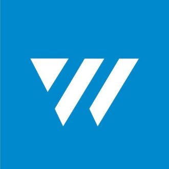
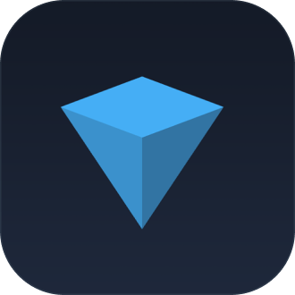
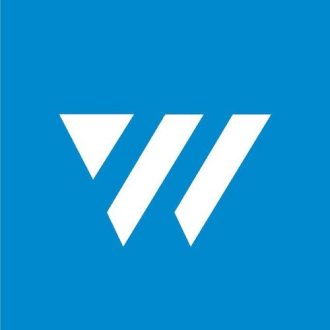
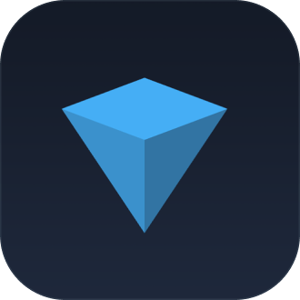

TON is a fully decentralized layer-1 blockchain designed by Telegram to onboard billions of users. It boasts ultra-fast transactions, tiny fees, easy-to-use apps, and is enviromentally friendly.
TON is scalable and shardable. Its flexible architecture lets it grow and grow, with no loss of performance.
It's used for transaction fees, securing the blockchain through staking, deciding how the network develops, and settling payments.

The Durov brothers, founders of Telegram Messenger, release the first version of the Telegram Open Network whitepaper.
Telegram was forced to cease active development of TON. A vibrant open-source community continues to maintain the network and build new TON functionality, bringing Telegram's design to fruition.
TON becomes The Open Network. TON mainnet is fully live operational, hosting ultra-cheap, fast, and ecologically friendly transactions.
RoadmapTON, Solana, and Ethereum 2.0 are examples of Proof of Stake blockchains. But key design and implementation differences mean TON comes out ahead on performance, versatility, and design.
Disclaimer: Please note that as with all technical comparisons, context is important when interpreting the table numbers. Refer to blockchain analysis for more information.
TON has a plenty of unique features that differentiate it from other layer-1 blockchains.
The actor model is a is a mathematical model of concurrent computation and is at the heart of TON smart contracts. In it, each smart contract can receive one message, change its own state or send one or several messages per unit time. As a result, the entire blockchain, as well as a given contract, can scale up to host an unlimited amount of users and transactions.
The TON Virtual Machine (TVM) is a deterministic, fully-featured stack based virtual machine. TVM is used to execute smart contracts on the TON blockchain. It's simple to work with and executes and stores code efficiently.
The TON blockchain and the contracts it hosts can receive external messages — from other blockchains and the web in general. This means that one can send a message to a TON smart contract without having an on-chain account, and smart contracts can process and utilize external data for on-chain operations.
Meet FunC, a domain-specific statically typed programming language for TON Virtual Machine, and in particular writing smart contracts on the TON blockchain. A standard library, stdlib.fc, will help you get started with FunC.
TON's architecture means any network account can hold a balance, as well as host code and data. In TON, even a simple wallet is a smart contract. This kind of universality allows developers to do whatever they'd like. One example - one could even write a smart contract that's able to change its own code according to certain input data or static rules.
Tonlib, the native client library of TON, has a number of unusual features. Not only does tonlib receive data from the blockchain, but it also checks the validity of data using Merkle-proofs. In this way, TON developers can use untrusted, external endpoints in interacting with the TON blockchain while knowing that the transaction remains secure.
Out of the box, TON supports smart-contract tokens and up to 232 native «extra-currencies».
Starting 2020, TON has grown thanks to the tireless efforts of a worldwide decentralized community of crypto enthusiasts, developers, designers, and other professionals. Our community is the key to TON's future, and we'd love for you to join us.

Discover the world of apps built on TON. They're convenient, user-friendly, and perfect for those just joining the world of crypto.


 




There are plenty of opportunities for people to contribute
to the network, even if they have no technical background.